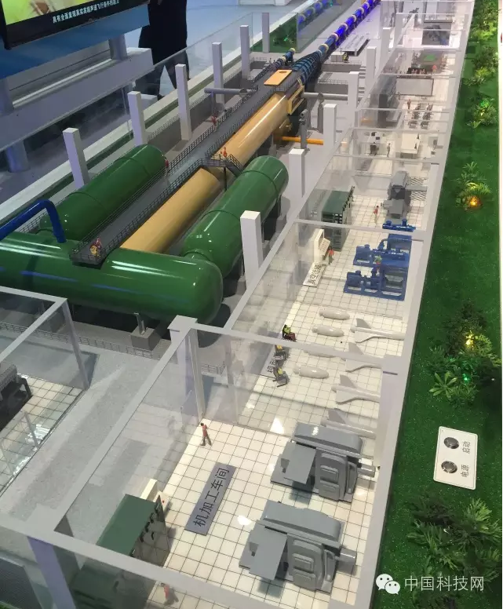

FAST500米口径球面射电望远镜
EAST全超导托卡马克核聚变实验装置、上海光源、500米口径球面射电望远镜(FAST)工程、JF12复现高超声速飞行条件长试验时间激波风洞、中国散裂中子源……这些专业甚至有些拗口的名称，不论你听没听过，今年就这样首次亮相在北京科技周上，让前来参观的公众们“脑洞”大开，围着讲解员连连问个不停。
退休老人高先生就是特意来看这些科学重器的，他说：“这些大科学装置的开放，有助于激发全民学习科学的热情。尤其是对于少年儿童来说，今天培养引导他们对于科学的热爱，明天他们就可能是一个个重要发明的创造者。”
大科学装置都有一个“最”
这些科学重器中，中国散裂中子源是在建的中国最大的科学装置，上海光源则是目前我国已建成的规模最大的大科学装置。
作为世界上性能最好的第三代同步辐射光源之一，上海光源这套装置被称为高品质的巨型X光机、超级显微镜，至今已运行开放7年，执行课题7677个，支撑了多个领域的成果产出。
“在给公众尤其是孩子们讲解时，都尽量把专业知识讲的通俗些，想办法让大家听懂。”现场讲解上海光源的龚先生告诉记者。为了激发孩子的兴趣，现场放置的显示屏平台可以触摸操作，从不同角度了解光源地图、光源外景和光源构成。
此外，JF12复现高超声速飞行条件长试验时间激波风洞是国际首座可复现飞行条件的高超声速风洞，500米口径球面射电望远镜(FAST)工程是世界第一大单口径球面射电望远镜。
郭守敬望远镜则是世界上口径最大的大视场望远镜，EAST全超导托卡马克核聚变实验装置则是世界首个“全超导托卡马克”核聚变实验装置。
对JF12风洞印象最深
记者在现场看到，对风洞的好奇吸引了很多参观者的眼球。在JF12复现高超声速飞行条件长试验时间激波风洞展区，讲解员要回答大家五花八门的提问。“我很期待我们国家未来能够研究出世界一流的高超音速的导弹和飞机。”做IT工作的王先生向记者说了他了解JF12风洞之后的感受，他一直对此很感兴趣。
据悉，JF12风洞全长260米，可复现25km-40km高空，马赫数5-9的高超声速飞行状态。“这在世界上是数一数二的技术。”现场的讲解员说。对于它的结构和原理，一端是真空舱，一端是产生高速气流的装置，讲解员还形象地做了一个比喻：“我们在坐飞机时，飞机是往前飞，但我们可以看成是飞机不动，气流在高速向后退；风洞实验室就是利用这个原理，产生高速气流，而飞机在测试时自身不动，模拟其在高速飞行时的一个状态。”
学生讲解更通俗易懂
“这次科学重器的12个展区项目是从中科院在建或已应用的项目中筛选出来的。”中国科学院的科普专员敖女士告诉记者，除了原有各科研所的工作人员，又安排了40多位中科院在读的博士、硕士以及北京其他高校的学生现场讲解。“除了讲解以外，还要做展品的维护。因为很多科研人员会讲的过于专业晦涩，安排学生讲解则能达到科普性更强和更通俗的效果。”
龚先生也说，他们这批讲解员已经在一个月前便开始了相关的知识储备，不仅定期听培训讲座，还要随时跟专家交流。
 发表
发表